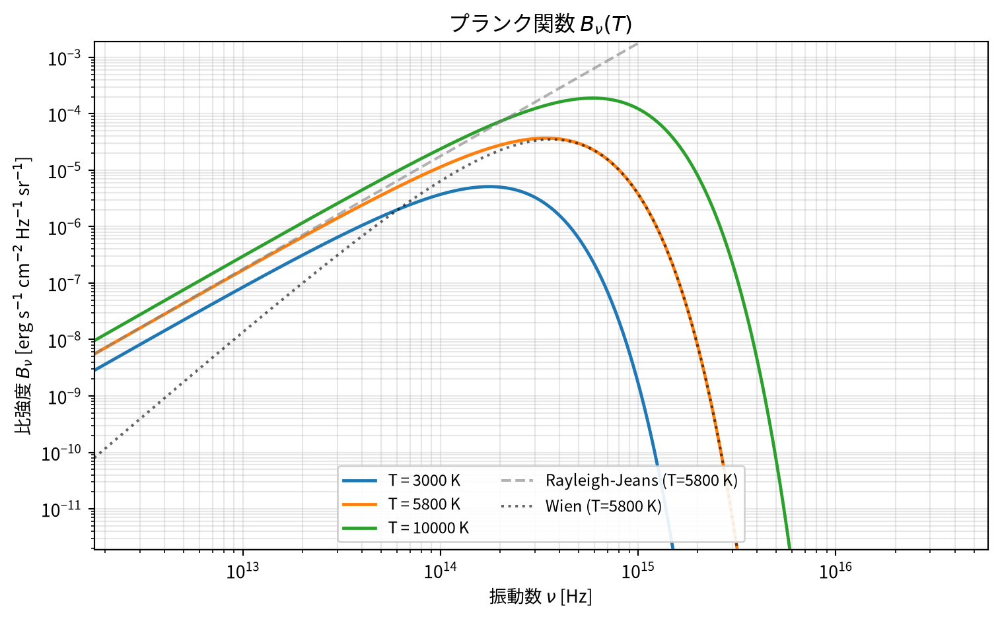
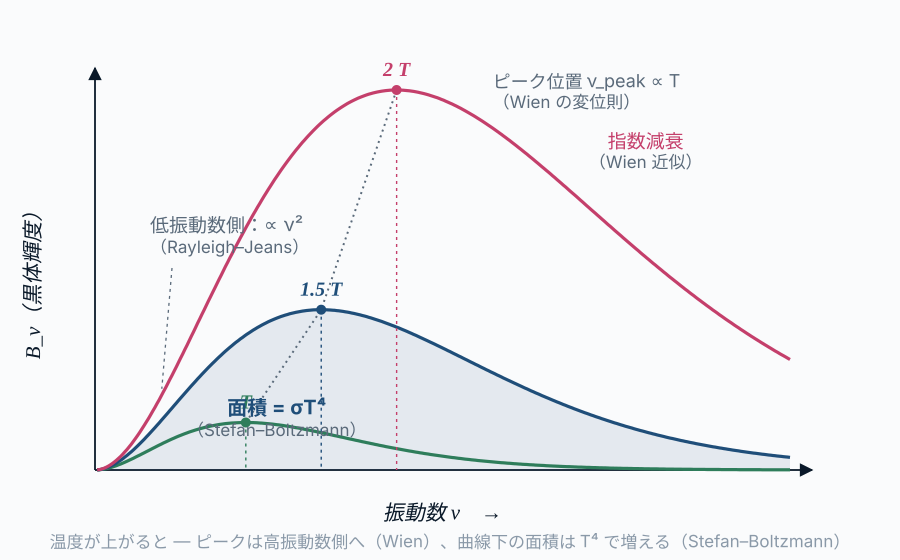

コード
import sys; sys.path.insert(0, "../code")
from planck_curve import plot_planck_with_limits
fig, ax = plot_planck_with_limits(temperatures=(3000, 5800, 10000))
fig
この章の主題：プランク分布の基本的な形と振る舞いを観測の言葉で読み解く。観測スペクトルから温度・半径・光度を引き出すための道具（Wien の法則、Stefan–Boltzmann 則、色温度など）を、観測の必要から立ち上げていく。
本章では、第1章で「観測される事実」として並べた黒体スペクトルを、どう測り、どう読むかという観測の側に踏み込む。式は「なぜそうなるか」（第III〜V部）に踏み込む前に、まず「観測量との対応関係」だけで扱う。
プランク関数（連続スペクトルの地図）
B_\nu(T) = \frac{2 h \nu^3}{c^2} \cdot \frac{1}{e^{h\nu/kT} - 1} \tag{6.1}
| 因子 | 物理的意味 | 結びつく部 |
|---|---|---|
| B_\nu | 観測量（比強度） | 第II部 |
| 1/(e^{h\nu/kT}-1) | 熱平衡・光子統計 | 第III部 |
| h\nu | エネルギー量子 | 第IV部 |
| \nu^3/c^2 | 電磁場のモード密度 | 第V部 |
| 黒体からのずれ | 現実の天体 | 第VI部 |
本章では、地図のプランク関数 B_\nu(T) そのものを「観測される曲線」として扱う。各因子の物理的起源は第III〜V部で逆引きしていく。本章はその準備として、曲線の形と読み方を共通言語にする。
この章を読み終えると、読者は次のことができるようになる：
[本文目安：B2]
第1章では、宇宙のさまざまな天体が「同じ関数族」に属する連続スペクトルを示すことを観察した。この関数族は、振動数 \nu の関数として書くと次の形をもつ：
B_\nu(T) = \frac{2 h \nu^3}{c^2} \cdot \frac{1}{e^{h\nu / kT} - 1} \tag{6.2}
ここで B_\nu は比強度（specific intensity）、つまり「単位面積・単位時間・単位立体角・単位振動数あたりのエネルギー」である。単位は erg s^{-1} cm^{-2} Hz^{-1} sr^{-1}（SI なら W m^{-2} Hz^{-1} sr^{-1}）。本章では「面を通過するエネルギーの目安」として簡略に用いるが、正式な定義 ― 面要素を法線から \theta 傾けて通過する成分に対する \cos\theta を含む形 ― は第4章 §4.1 で扱う。
本章での扱い方：率直に言えば、本章では B_\nu（式 6.2）を一度ひとつの経験式・観測曲線として受け入れる。第1章で「観測される現象」として温度ごとに同じ形をとることを確認したので、いまはその観測される曲線を表す式が上のように書ける、という事実だけ使う。式の各因子（2h\nu^3/c^2、1/(e^{h\nu/kT}-1)）がなぜこの形になるかは、第8章（光子統計）、第10章（プランクの量子仮説）、第14章（モード密度）で順に逆引きする。
この曲線の特徴を、まず観測の言葉で整理しよう：
温度を変えると、曲線全体がピークごと平行移動し、面積が急激に変わる。
これら観測で測る三つの特徴は、プランク関数 式 6.2 の三つの因子に一対一で対応する。本章は「観測から式へ」の対応を読む章なので、その対応をあらかじめ表にしておく：
| 観測で測る特徴 | プランク関数の因子 | 逆引きする部 |
|---|---|---|
| 低振動数の傾き（\propto \nu^2） | 前因子 2h\nu^3/c^2 のうちモード密度由来の \nu^2 | 第V部（モード密度） |
| ピーク位置（h\nu \simeq 2.82\,kT） | 指数因子 1/(e^{h\nu/kT}-1) と前因子の競合 | 第III・IV部（光子統計・量子化） |
| Wien 側の指数減衰（e^{-h\nu/kT}） | 指数因子の高振動数極限 | 第IV部（エネルギー量子化） |
各因子の物理的起源を逆引きするのが第III〜V部であり、本章はその「読み方」を先に固める。
import sys; sys.path.insert(0, "../code")
from planck_curve import plot_planck_with_limits
fig, ax = plot_planck_with_limits(temperatures=(3000, 5800, 10000))
fig
[本文目安：B3｜導出：B3]
スペクトルは振動数 \nu で表すこともあれば、波長 \lambda で表すこともある。同じ物理現象なのだから、同じ放射エネルギーを表しているはずだが、B_\nu と B_\lambda の関数形は異なる。
両者は同じエネルギーを異なる変数の刻みで表現している：
B_\nu \, d\nu = -B_\lambda \, d\lambda \tag{6.3}
ここで \nu = c/\lambda から d\nu = -c/\lambda^2 \, d\lambda なので、
B_\lambda(T) = B_\nu(T) \cdot \frac{c}{\lambda^2} = \frac{2 h c^2}{\lambda^5} \cdot \frac{1}{e^{hc/\lambda kT} - 1} \tag{6.4}
ジャコビアン c/\lambda^2 がかかることで、B_\lambda の関数形は B_\nu と異なる。
ピーク位置のずれ：
| 表示 | ピーク条件 | 太陽（T = 5778 K）での値 |
|---|---|---|
| B_\nu | h\nu / kT \simeq 2.82 | \nu_{\max} \simeq 3.4 \times 10^{14} Hz（\lambda \simeq 880 nm） |
| B_\lambda | hc/\lambda kT \simeq 4.97 | \lambda_{\max} \simeq 502 nm |
この「ピーク位置がずれる」現象は、観測のミスを生みやすい。同じ温度の太陽について、振動数で見ると「赤外にピーク」、波長で見ると「可視（緑）にピーク」となる。両者に矛盾はない。スペクトルのピーク位置を語るときは、必ずどちらの変数で語っているかを明示するのが鉄則である。
本書の流儀：本書では特に断らない限り、振動数表示 B_\nu(T) を主とする。理由は、放射輸送方程式やモード密度の議論（第II・V部）が振動数表示で素直に書けるからである。波長表示が便利な場面（観測装置の特性、可視光天文学）では適宜変換する。
[本文目安：B2]
式 6.4 のピーク条件から、波長表示のピーク \lambda_{\max} と温度 T の間に簡単な関係が成り立つ：
\lambda_{\max} \cdot T = b \simeq 2.898 \times 10^{-3}\ \mathrm{m \cdot K} \tag{6.5}
これが Wien の変位則（Wien’s displacement law）である。b は Wien の変位定数。

実例：
| 天体 | 温度 T [K] | \lambda_{\max} |
|---|---|---|
| CMB | 2.7 | \sim 1.07 mm（マイクロ波） |
| 星間ダスト | 30 | \sim 100 μm（遠赤外） |
| 木星 | 130 | \sim 22 μm（中間赤外） |
| 地球 | 290 | \sim 10 μm（中間赤外） |
| 太陽 | 5800 | \sim 500 nm（可視） |
| O 型星 | 30000 | \sim 100 nm（紫外） |
観測との対応：可視光から赤外までで観測した SED（spectral energy distribution）のピーク波長を読み取れば、Wien の式で逆算するだけで、温度を一桁の精度で推定できる。これが天文学で最もよく使う「色から温度」のステップである。
振動数表示の Wien：振動数表示のピーク位置 \nu_{\max}/T \simeq 5.88 \times 10^{10} Hz/K も Wien の式の別表現として有用。ただし上述のとおり、波長表示と振動数表示でピーク位置の温度依存は同じ「逆比例」だが、定数の値が違うので両者を混ぜないように。
[本文目安：B2]
プランク曲線 B_\nu(T) から、黒体表面の単位面積・単位時間あたりに放出される全エネルギー（全放射フラックス）が得られる。手順は二段階：
(i) 振動数別フラックス F_\nu：黒体表面は等方放出をするが、観測者がいるのは外向きの半球である。表面から半球の全方向に立体角積分すると、射影因子 \cos\theta がかかって（式 8.6 参照）
F_\nu = \int_{\text{半球}} B_\nu \cos\theta\, d\Omega = \pi B_\nu(T) \tag{6.6}
ここで「全立体角 4\pi ではなく \pi」になるのは、半球積分かつ\cos\theta 射影の二つの効果（\int_0^{2\pi} d\varphi \int_0^{\pi/2} \cos\theta \sin\theta\, d\theta = \pi）から。第II部・第4章で改めて整理する。
(ii) 全振動数積分：F = \int_0^\infty F_\nu d\nu = \pi \int_0^\infty B_\nu d\nu を実行すると
F = \sigma T^4 \tag{6.7}
ここで \sigma = 5.670 \times 10^{-5} erg s^{-1} cm^{-2} K^{-4} は Stefan–Boltzmann 定数（Stefan–Boltzmann constant）である。
「T^4」という強い温度依存性は天文学のスケール感を支配する：
光度（luminosity, 単位時間に天体全体から放出されるエネルギー）は、半径 R の球を仮定すれば
L = 4\pi R^2 \cdot \sigma T^4 \tag{6.8}
これと観測される光度から、半径と温度の組み合わせ R^2 T^4 を読み出せる。距離が分かっていれば、観測されるフラックス f と光度の関係 L = 4\pi d^2 f から、独立に L を決められる。
T^4 の物理：Stefan–Boltzmann 則の温度依存 T^4 は、本章では「観測事実」として受け入れる。理由は第6章（熱平衡における放射場のエネルギー密度 u = aT^4）と第8章（光子の統計力学）で逆引きする。
[本文目安：B3｜導出：B3]
プランク分布の両端の極限は、それぞれ別個の式として古典物理の中で扱われていた。本書ではこれを「同じプランク分布の両極限」として統一的に見る。
h\nu \ll kT では、e^{h\nu/kT} - 1 \simeq h\nu/kT なので
B_\nu(T) \underset{h\nu \ll kT}{\longrightarrow} \frac{2 \nu^2}{c^2} kT \tag{6.9}
ここに h が現れていないことに注意。これは古典物理から（量子論なしで）導ける式である。電波天文学ではほぼ常にこの極限で観測している。
h\nu \gg kT では、e^{h\nu/kT} - 1 \simeq e^{h\nu/kT} なので
B_\nu(T) \underset{h\nu \gg kT}{\longrightarrow} \frac{2 h \nu^3}{c^2} e^{-h\nu/kT} \tag{6.10}
こちらは指数関数で急激に落ちる側。h が現れることが本質的で、古典物理だけでは出てこない。
低振動数では h なしで OK、高振動数では h が本質的に効く ― この事実は、古典統計と量子の境目を観測スペクトルが直接示していることを意味する。第IV部・第9章で「古典論ではなぜ失敗するのか（紫外線破綻）」を本格的に扱うが、そこへの伏線がここに置かれている。
目安：h\nu/kT \sim 1、つまり \nu \sim kT/h を境に、Rayleigh–Jeans 側か Wien 側かが切り替わる。太陽光（T \sim 5800 K）なら境界は \nu \sim 10^{14} Hz（近赤外）。電波域は完全に RJ 側、可視光は遷移域、紫外〜X 線は Wien 側。
問い：なぜ古典論で導けるのは Rayleigh–Jeans 側だけなのか？
短答：古典論ではエネルギー等分配定理が成り立ち、放射場の各モードに kT のエネルギーが分配される。これがそのまま B_\nu \propto \nu^2\, kT という RJ 形を生む。一方、Wien 側で必要な指数関数的減衰は、エネルギーが h\nu という離散単位でやりとりされるという量子的性質がないと出てこない。
もう一歩：高振動数側で古典論を信じ続けると、全エネルギーが発散する。これが「紫外線破綻」で、観測される黒体スペクトルの形と決定的に矛盾する。この矛盾こそが量子論を要請した歴史的契機である。詳しくは第9章。
[本文目安：B3｜導出：B3]
「天体の温度」と言っても、現実の天体は完全な黒体ではない。観測値から「温度」を引き出す手段はいくつかあり、それぞれ別物として扱う必要がある。
| 温度 | 定義 | 用途 |
|---|---|---|
| 色温度 T_c（color temperature） | 観測スペクトルの形（特に二点の比）が一致する黒体の温度 | 連続スペクトル形を黒体と比較するとき |
| 有効温度 T_\mathrm{eff}（effective temperature） | 全光度が等しくなる黒体の温度。L = 4\pi R^2 \sigma T_\mathrm{eff}^4 で定義 | 恒星の全放射エネルギーを基準にするとき |
| 輝度温度 T_b（brightness temperature） | ある振動数 \nu で観測される比強度 I_\nu が、その振動数のプランク関数と等しくなる温度。I_\nu = B_\nu(T_b) | 電波観測でほぼ常用 |
完全な黒体ならこれら三つはすべて一致する。ずれの大きさが、その天体がどれだけ黒体からはずれているかの指標にもなる。
注意（観測）：太陽の場合、色温度・有効温度・輝度温度はおおよそ似た値（5500〜5800 K）になるが、波長帯によって 100 K 程度のずれが現れる。これは「太陽が完全な黒体ではない」ことの定量的な証拠であり、第15章（恒星大気と吸収線）でこのずれの起源を扱う。
[本文目安：B3｜導出：B3]
第1章 1.7 でみたように、現実の天体スペクトルは黒体から多少なりともずれる。観測で出会う主な「ずれ」を整理しておく：
重要なポイントは、1〜4 のずれを測ることが観測天文学の主要な仕事である、ということである。黒体スペクトルは「比較の基準」として、ずれの定量化を可能にしてくれる。5 の非熱的放射は本書の中心テーマではないが、観測スペクトルに重なる場面では明示的に区別する必要がある。
[本文目安：B3｜導出：B3]
ここまでの道具を使って、実際に観測データから物理量を引き出す手順を整理する。
典型的なワークフロー（恒星を例に）：
この一連の手順は、プランク分布が中心地図として機能しているからこそ意味を持つ。観測量と物理量を結ぶ橋渡しが、すべて B_\nu(T) の形（とそのモーメント）に集約される。
例（数値）：太陽
実測値ともよく一致する。これが「太陽が黒体に近い」ことの定量的な証拠になっている。
中心地図に戻る
本章で、中心地図のプランク関数 B_\nu(T) について、観測の側からの「読み方」が一通り定まった：
ただし「なぜそうなるか」は、まだ何も答えていない。なぜプランク分布の前因子が 2h\nu^3/c^2 なのか、なぜ指数関数因子が 1/(e^{h\nu/kT}-1) なのか、なぜ Stefan–Boltzmann の指数が T^4 なのか。これらは第III部（統計力学）以降の逆引きで明らかになる。
次章へ：第3章では、もう一つの観測事実 ―「なぜ材質によらず同じスペクトル形になるのか」― を扱う。この「普遍性」が、第III部の熱平衡・統計力学への入口になる。
[導出補完] 解答例 は章末「解答例」にまとめてある（オンライン版では各問のボタンから開く）。まず自力で解いてから確認すると効果的である。
[★ 難易度：☆☆ ] [導出補完]
§2.2 は B_\lambda=B_\nu\cdot c/\lambda^2 を与えた。これを導く。出発点は「同じエネルギーを異なる変数の刻みで表す」という関係 B_\nu\,d\nu=-B_\lambda\,d\lambda。
関連：§2.2 振動数表示と波長表示／ピーク位置のずれは演習 2-2、比強度の定義は 第4章。
[★ 難易度：☆☆☆ ] [導出補完]
§2.3 は \lambda_{\max}T=b\simeq2.898\times10^{-3} m·K を結果として与えた。B_\lambda を最大化して導く。x\equiv hc/\lambda kT とおく。
関連：§2.3 Wien の変位則／振動数表示ピーク 2.821 の導出は演習 10-4、データ照合は演習 1-1。
[★ 難易度：☆☆ ] [導出補完]
§2.4 は黒体表面の射出フラックスが F_\nu=\displaystyle\int_{\text{半球}}B_\nu\cos\theta\,d\Omega=\pi B_\nu になると述べ、立体角積分の値だけ示した。これを自分で実行する。
関連：§2.4 Stefan–Boltzmann 則／フラックスと比強度の正式な定義（\cos\theta の由来）は 第4章 放射場。
[★ 難易度：☆☆☆ ] [導出補完]
§2.4 は \sigma の数値だけ与え、導出を第6・8章に委ねた。F=\pi\displaystyle\int_0^\infty B_\nu\,d\nu から直接 \sigma を基本定数で表す。
関連：§2.4 Stefan–Boltzmann 則／a=4\sigma/c と a の導出は演習 10-3、本文 §10.3。積分公式は 付録A 数学ノート。
[★ 難易度：☆☆☆ ] [理解を深める]
§2.8 のワークフローを数値で実行する。観測量：ピーク波長 \lambda_{\max}\simeq500 nm、地球での太陽定数 f\simeq1.36\times10^3 W m^{-2}、距離 d=1 AU =1.496\times10^{11} m。
関連：§2.8 観測データから推定／各道具は §2.3・§2.4、\sigma の導出は演習 2-4。
各問の「解答例を見る」ボタンを押すと、右側のパネルに解答例が表示され、問題文と見比べられる（背景は暗くならず本文はそのまま読める）。印刷版・EPUB版では下に順に掲載される。
問題 2-1 問題 2-2 問題 2-3 問題 2-4 問題 2-5
解答 6.1.
解答例（問題 2-1）
(1) \nu=c/\lambda を微分して d\nu=-(c/\lambda^2)d\lambda。\nu が増えると \lambda が減るので負号がつく。物理量（エネルギー）は正なので、刻みの向きを合わせるために B_\nu\,d\nu=-B_\lambda\,d\lambda と書く。これに d\nu=-(c/\lambda^2)d\lambda を入れると
B_\nu\left(-\frac{c}{\lambda^2}\right)d\lambda=-B_\lambda\,d\lambda\ \Rightarrow\ B_\lambda=B_\nu\frac{c}{\lambda^2}.
両辺の負号が打ち消し、最終式は正になる。
(2) \nu=c/\lambda を代入。前因子：\dfrac{2h\nu^3}{c^2}\cdot\dfrac{c}{\lambda^2}=\dfrac{2h}{c^2}\dfrac{c^3}{\lambda^3}\dfrac{c}{\lambda^2}=\dfrac{2hc^2}{\lambda^5}。指数：h\nu/kT=hc/\lambda kT。よって
B_\lambda=\frac{2hc^2}{\lambda^5}\frac{1}{e^{hc/\lambda kT}-1}.
(3) B_\nu\propto\nu^3 にヤコビアン c/\lambda^2\propto\lambda^{-2} が掛かる。\nu^3\propto\lambda^{-3} なので \lambda^{-3}\cdot\lambda^{-2}=\lambda^{-5}。冪の差2はヤコビアン由来。
答え：B_\lambda=B_\nu c/\lambda^2=\dfrac{2hc^2}{\lambda^5}\dfrac{1}{e^{hc/\lambda kT}-1}。\lambda^{-5} の「5」はヤコビアン \lambda^{-2} が \nu^3=\lambda^{-3} に掛かるため。
解答 6.2.
解答例（問題 2-2）
(1) f(\lambda)=\lambda^{-5}(e^{x}-1)^{-1}、x=hc/\lambda kT なので dx/d\lambda=-x/\lambda。積の微分：
f'=-5\lambda^{-6}(e^x-1)^{-1}-\lambda^{-5}\frac{e^x}{(e^x-1)^2}\frac{dx}{d\lambda}=0.
dx/d\lambda=-x/\lambda を代入し、\lambda^{-6}(e^x-1)^{-1} で割ると
-5+\frac{x e^x}{e^x-1}=0\ \Rightarrow\ x e^x=5(e^x-1)\ \Rightarrow\ (5-x)e^x=5,\ \text{即ち}\ x=5(1-e^{-x}).
(2) 非自明解は x_{\max}\approx4.965。x=hc/\lambda_{\max}kT より
\lambda_{\max}T=\frac{hc}{x_{\max}k}=\frac{hc}{4.965\,k}.
数値：hc=6.626\times10^{-34}\times3.00\times10^8=1.988\times10^{-25} J·m。4.965k=4.965\times1.381\times10^{-23}=6.857\times10^{-23}。よって b=1.988\times10^{-25}/6.857\times10^{-23}=2.90\times10^{-3} m·K。✓
(3) ピークを与える条件は最大化する関数（B_\lambda か B_\nu）で異なる。両者はヤコビアン c/\lambda^2 だけずれた別関数なので、最大点も別位置になる（x=4.965 と 2.821）。\lambda_{\max}=hc/4.965kT、\nu_{\max}=2.821kT/h ゆえ \lambda_{\max}\nu_{\max}=(2.821/4.965)c\approx0.568\,c\ne c。同じスペクトルでも「どの変数でピークを測るか」で答えが変わる。
答え：(5-x)e^x=5\Rightarrow x\approx4.965、b=hc/4.965k\approx2.90\times10^{-3} m·K。\lambda_{\max}\nu_{\max}=0.568c\ne c（ヤコビアンでピークがずれるため）。
解答 6.3.
解答例（問題 2-3）
(1) 黒体は等方なので B_\nu は方向に依らず積分の外へ：
\int_{\text{半球}}\cos\theta\,d\Omega=\int_0^{2\pi}d\varphi\int_0^{\pi/2}\cos\theta\sin\theta\,d\theta=2\pi\left[\frac{\sin^2\theta}{2}\right]_0^{\pi/2}=2\pi\cdot\frac12=\pi.
よって F_\nu=\pi B_\nu。
(2) （i）表面から外へ出る放射だけを数えるので積分は上半球 2\pi sr に限る（下向きは表面内部へ向かい射出に寄与しない）。（ii）フラックスは面を 垂直に 通る成分なので、法線から \theta 傾いた方向の寄与には射影因子 \cos\theta が掛かる。\cos\theta の角度平均が 1/2 なので、2\pi\times\tfrac12=\pi となる。
(3) \int_{\text{半球}}d\Omega=2\pi なので値は 2\pi B_\nu。だがこれは「すべての方向の放射が面を垂直に通る」と誤って数えたことになり、斜め方向の放射が面を通る実効断面が \cos\theta で減る効果を無視している。フラックス（面を通過する正味エネルギー流）の定義に反するので物理的に正しくない。
答え：\int_{\text{半球}}\cos\theta\,d\Omega=\pi。半球に限る効果（2\pi）×\cos\theta 射影の平均（1/2）＝\pi。\cos\theta を落とすと 2\pi B_\nu となり射影を無視した誤り。
解答 6.4.
解答例（問題 2-4）
(1) x=h\nu/kT、\nu=kTx/h、d\nu=(kT/h)dx。前因子 \dfrac{2h}{c^2}\nu^3=\dfrac{2h}{c^2}\left(\dfrac{kT}{h}\right)^3x^3。d\nu の (kT/h) と合わせて
F=\pi\cdot\frac{2h}{c^2}\left(\frac{kT}{h}\right)^4\int_0^\infty\frac{x^3}{e^x-1}dx=\frac{2\pi k^4}{c^2h^3}T^4\int_0^\infty\frac{x^3}{e^x-1}dx.
(2) 積分 =\pi^4/15 を代入：
F=\frac{2\pi k^4}{c^2h^3}\frac{\pi^4}{15}T^4=\underbrace{\frac{2\pi^5k^4}{15c^2h^3}}_{\sigma}T^4.
数値（SI）：分子 2\pi^5k^4=2\times306.0\times(1.381\times10^{-23})^4=612.0\times3.64\times10^{-92}=2.23\times10^{-89}。分母 15c^2h^3=15\times(3.00\times10^8)^2\times(6.626\times10^{-34})^3=15\times9.00\times10^{16}\times2.91\times10^{-100}=3.93\times10^{-82}。よって \sigma\approx5.67\times10^{-8} W m^{-2}K^{-4}。✓
(3) \dfrac{ac}{4}=\dfrac{1}{4}\cdot\dfrac{8\pi^5k^4}{15c^3h^3}\cdot c=\dfrac{2\pi^5k^4}{15c^2h^3}=\sigma。確かに \sigma=ac/4。エネルギー密度 u=aT^4 と射出フラックス F=\sigma T^4 が \sigma=ac/4 で結ばれる（等方場 u=4\pi B/c、F=\pi B から F=(c/4)u）。
答え：\sigma=\dfrac{2\pi^5k^4}{15c^2h^3}\approx5.67\times10^{-8} W m^{-2}K^{-4}。放射定数とは \sigma=ac/4。
解答 6.5.
解答例（問題 2-5）
(1) T=b/\lambda_{\max}=2.898\times10^{-3}/5.00\times10^{-7}=5.80\times10^3 K。（有効温度 \simeq5800 K）
(2) L=4\pi d^2 f=4\pi(1.496\times10^{11})^2\times1.36\times10^3。d^2=2.238\times10^{22}、4\pi d^2=2.812\times10^{23}、\times f=3.82\times10^{26} W。すなわち L_\odot\simeq3.8\times10^{26} W（既知 3.83\times10^{26} W と一致）。
(3) \sigma T^4=5.67\times10^{-8}\times(5800)^4=5.67\times10^{-8}\times1.13\times10^{15}=6.41\times10^7 W m^{-2}。
R=\sqrt{\frac{L}{4\pi\sigma T^4}}=\sqrt{\frac{3.82\times10^{26}}{4\pi\times6.41\times10^7}}=\sqrt{\frac{3.82\times10^{26}}{8.05\times10^8}}=\sqrt{4.74\times10^{17}}\approx6.9\times10^8\ \text{m}.
既知値 6.96\times10^8 m とよく一致。観測量（ピーク波長・フラックス・距離）だけから太陽の物理量がプランク分布を介して再現できる。
答え：T\simeq5800 K、L_\odot\simeq3.8\times10^{26} W、R_\odot\simeq6.9\times10^8 m。いずれも実測とよく一致。